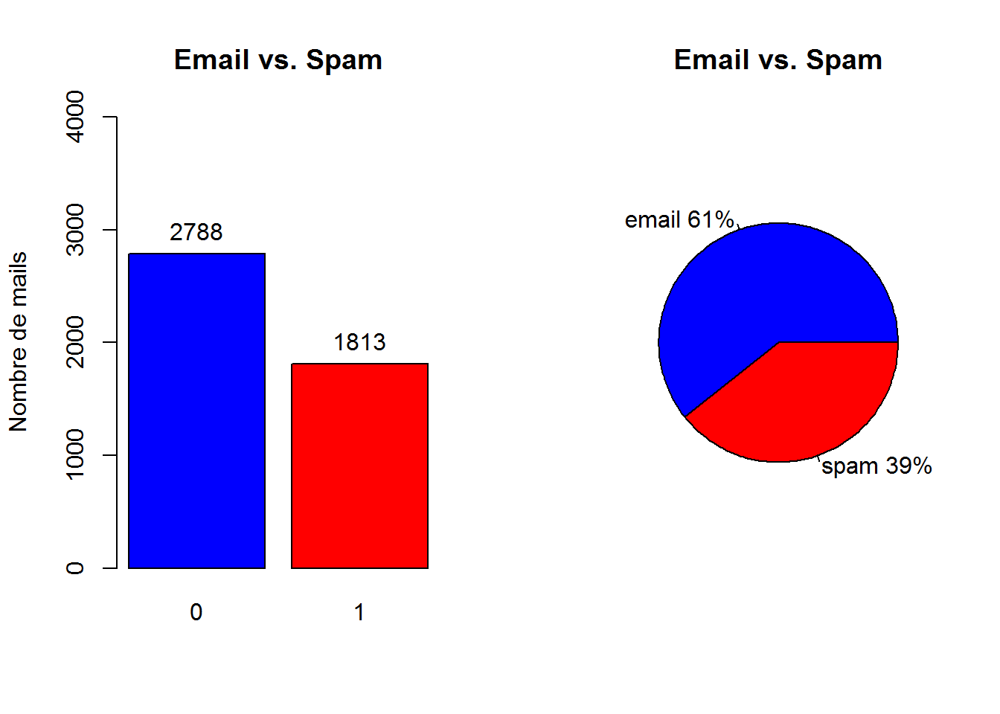
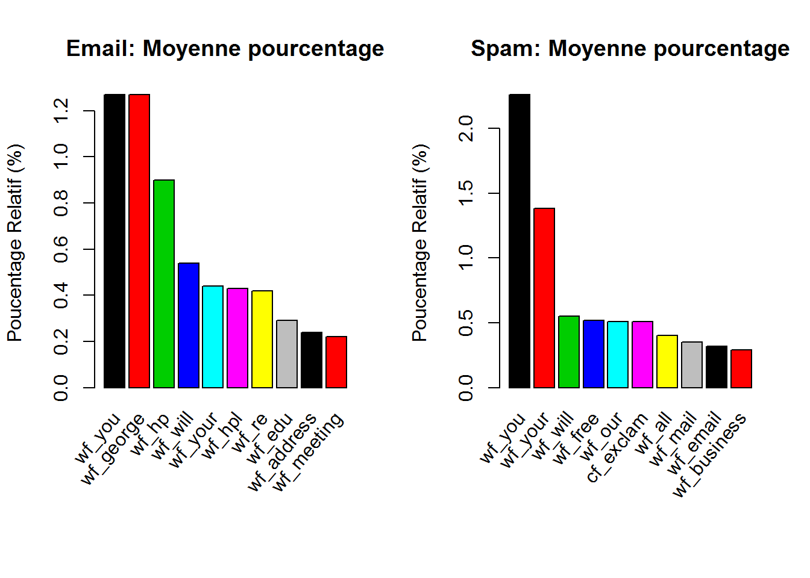
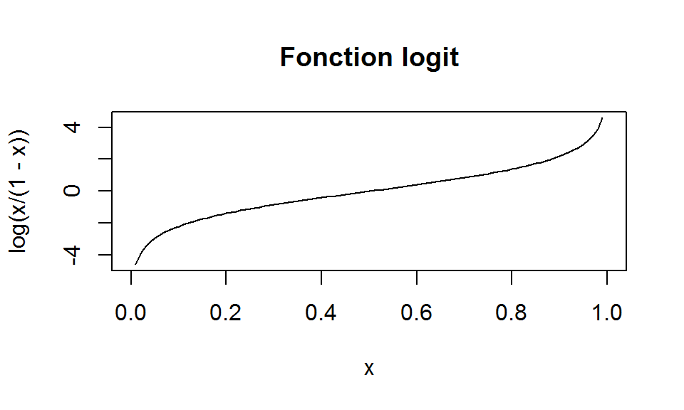
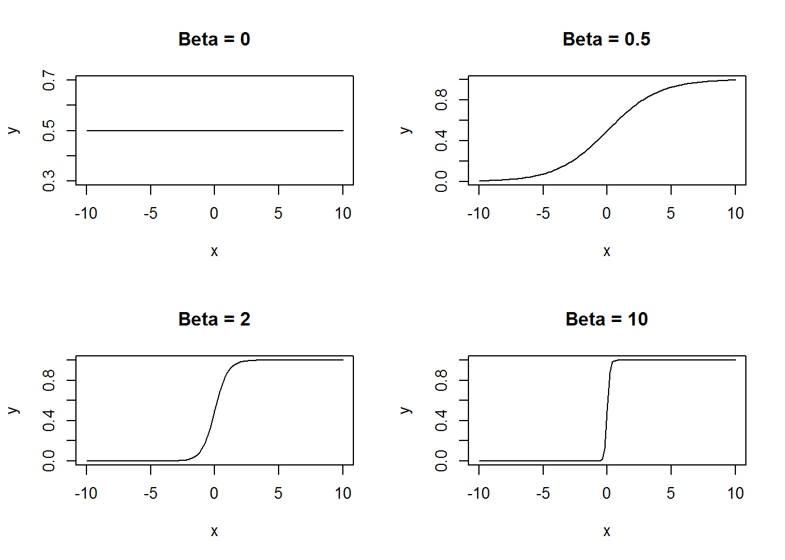
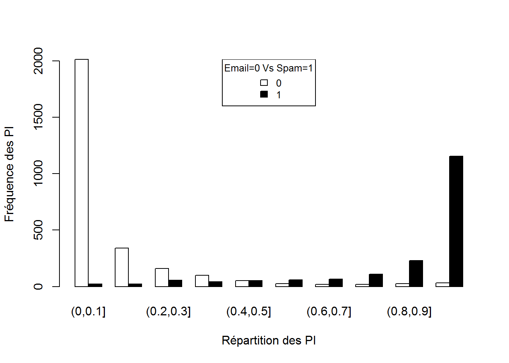
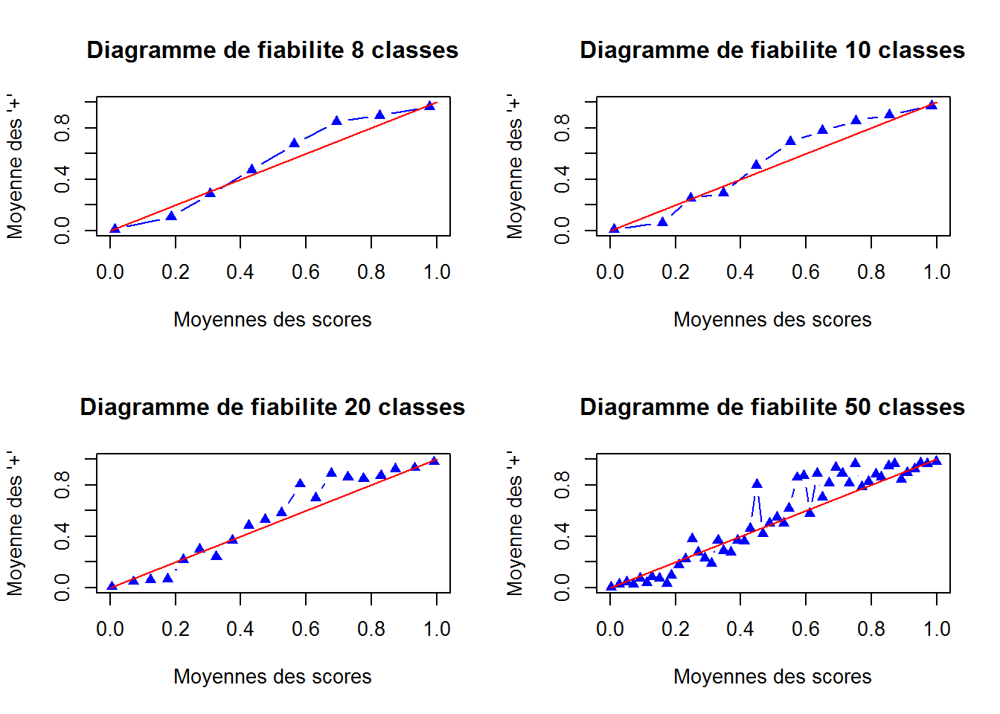
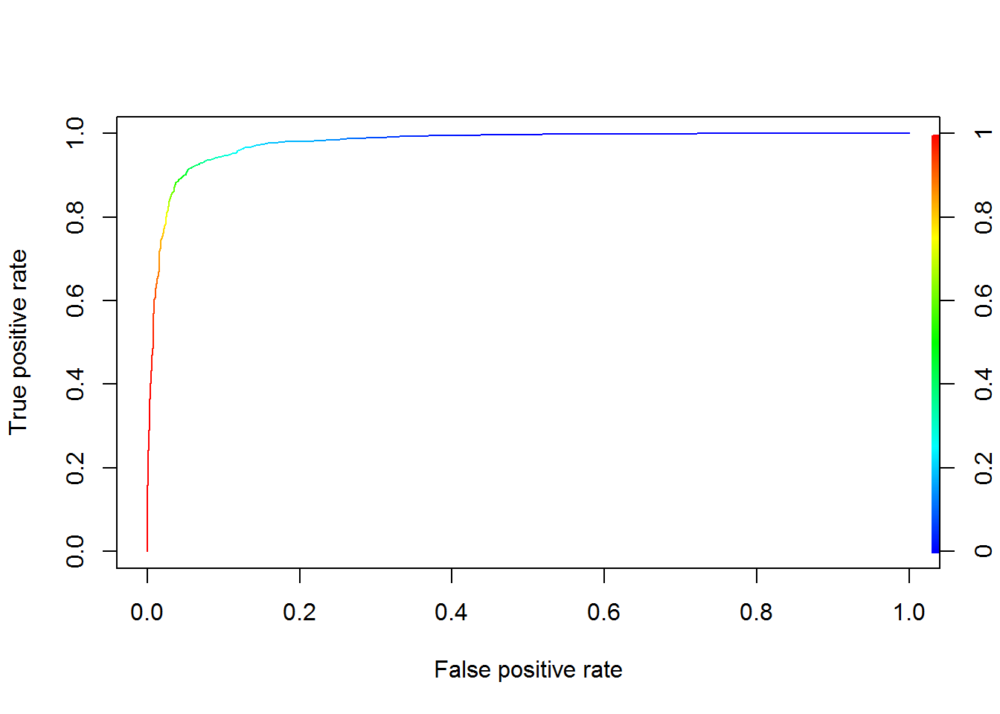
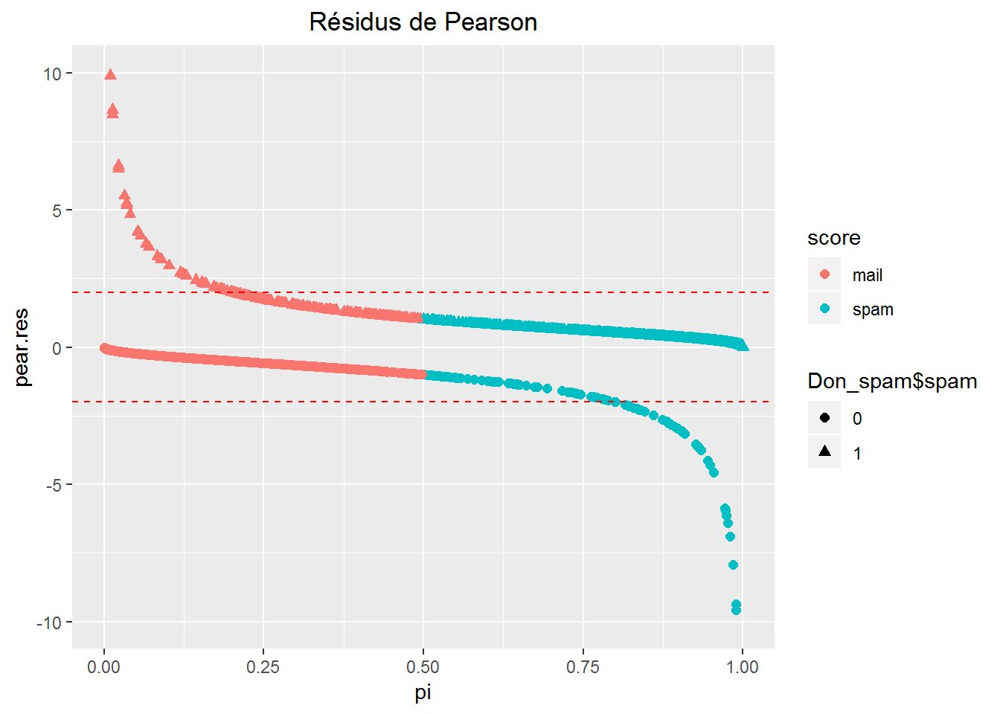
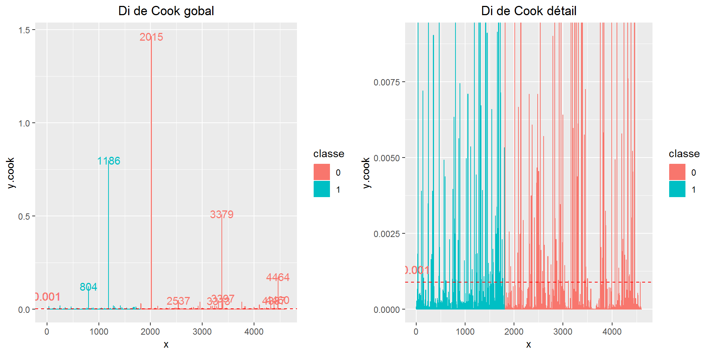

Informations principales sur la structure de données :
Attribute Information:
# The last column of 'spambase.data' denotes whether the e-mail was
# considered spam (1) or not (0), i.e. unsolicited commercial e-mail.
# Most of the attributes indicate whether a particular word or
# character was frequently occuring in the e-mail. The run-length
# attributes (55-57) measure the length of sequences of consecutive
# capital letters. For the statistical measures of each attribute,
# see the end of this file. Here are the definitions of the attributes:
#
# 48 continuous real [0,100] attributes of type word_freq_WORD
# = percentage of words in the e-mail that match WORD,
# i.e. 100 * (number of times the WORD appears in the e-mail) /
# total number of words in e-mail. A "word" in this case is any
# string of alphanumeric characters bounded by non-alphanumeric
# characters or end-of-string.
#
# 6 continuous real [0,100] attributes of type char_freq_CHAR
# = percentage of characters in the e-mail that match CHAR,
# i.e. 100 * (number of CHAR occurences) / total characters in e-mail
#
# 1 continuous real [1,...] attribute of type capital_run_length_average
# = average length of uninterrupted sequences of capital letters
#
# 1 continuous integer [1,...] attribute of type capital_run_length_longest
# = length of longest uninterrupted sequence of capital letters
#
# 1 continuous integer [1,...] attribute of type capital_run_length_total
# = sum of length of uninterrupted sequences of capital letters
# = total number of capital letters in the e-mail
#
# 1 nominal {0,1} class attribute of type spam
# = denotes whether the e-mail was considered spam (1) or not (0),
# i.e. unsolicited commercial e-mail.
#
#
# 8. Missing Attribute Values: None
#
# 9. Class Distribution:
# Spam 1813 (39.4%)
# Non-Spam 2788 (60.6%)Pour résumer, le fichier se compose de 54 colonnes reprsentants des fréquences d’apparation d’un mot (“wf_hp” pour le mot “hp”) ou la fréquence d’un caractère spécial (“cf_dollar” pour le caractère “$”). Enfin nous avons 3 colonnes liées au caractères en majuscules et la variable réponse (spam “1”, non spam “0”).
Proportion Mail/Spam :

Moyenne des frequences des mots/caracteres par type de mail spam/non spam : 
Notations :
\(X=(1,X_{1},...,X_{p})'\), vecteur aléatoire de dimension \(p+1\).
Les marginales \(X_{j}\) sont les variables explicatives.
Soit \(x=(1,x_{1},...,x_{p})'\), une réalisation de \(X\).
\(Y\) variable à expliquer (univariée).
\((X_{1},Y_{1}),...,(X_{n},Y_{n})\) un échantillon aléatoire (iid et de même loi que le couple \((X,Y)\)) tel que \(X_{i}=(1,X_{i1},...,X_{ip})'\).
\((x_{1},y_{1}),...,(x_{n},y_{n})\) une réalisation de \((X_{1},Y_{1}),...,(X_{n},Y_{n})\).
\(X\) matrice des observations :
\(\begin{matrix} 1 & x_{11} \cdots & x_{1p} \\ \vdots & & \vdots \\ 1 & x_{n1}\cdots & x_{np} \end{matrix}\)
Rappels sur le modèle linéaire :
On chercher à expliquer une variable \(Y\) par \(p\) variables \(X=(1,X_{1},...,X_{p})'\). Le but est de modéliser la dépendance de la variable réponse \(Y\) sur les variables explicatives \(X_{1},...,X_{p}\).
Les aspects de la modélisation :
Le modèle linéaire s’écrit :
\(Y=X'\beta + \epsilon = \beta_{0}+\beta_{1}X_{1}+...+\beta_{p}X_{p}+\epsilon\)
Avec
\(\beta=(\beta_{0},\beta_{1},...,\beta_{p})' \in \mathbb{R}^{p+1}\) et \(\epsilon=N(0,\sigma^2)\) \(Y\sim N(X'\beta,\sigma^2)\) (hypothèse d’homoscédasticité)
Dans le cas d’une variable \(Y\) qualitative (état, sexe, couleur), l’enjeu est d’expliquer l’appartenance d’un individu à un groupe à partir des \(p\) variables (on parlera de discrimination).
⚠⚠⚠
Contrairement à la régression linéaire, ici on ne peut pas modéliser directement une relation linéaire entre \(Y\) et \(X\).
⚠⚠⚠
On va s’interesser aux probabilités \(P(Y=g_{k}|X=x)\). Pour simplifier, prenons le cas ou \(Y\) est binaire (0 ou 1). De fait, si l’on connait \(P(Y=1|X=x)\) on connait \(P(Y=0|X=x)\).
On peut envisager une relation de la forme :
\(p_{\beta}(x)=\beta_{0}+\beta_{1}X_{1}+...+\beta_{p}X_{p}+\epsilon=X'\beta+\epsilon\)
Ici l’hypothèse d’homoscedasticité des résidus est non vérifiée. En effet, la variance de \(Y|X = p_{\beta}(x)*(1-p_{\beta}(x))\) (non constante).
Egalement, à ce stade nous n’avons pas de restriction sur les valeurs des \(\beta\) et donc des valeurs de \(p_{\beta}(x)\) \((p_{\beta}(x)\in\mathbb{R})\).
Dans notre cas, nous voulons expliquer la variable \(Y\) (spam “1” ou non spam “0”) par \(p\) variables explicatives \(X=(1,X_{1},...,X_{p})'\).
Le modèle logistique propose une modélisation de la loi de \(Y|X=x\) par une loi de Bernouilli de paramètre \(p_{\beta}(x)=P_{\beta}(Y=1|X=x)\) telle que :
\(log(\frac{p_{\beta}(x)}{1-p_{\beta}(x)})=\beta_{0}+\beta_{1}X_{1}+...+\beta_{p}X_{p}=x'\beta\)
ou encore \(logit \space p_{\beta}(x)=x'\beta\)
\(logit\) désignant la fonction bijective et dérivable de \(]0 \space 1[\) dans \(\mathbb{R}:p \to log(p/1-p)\)

L’égalité peut s’écrire :
\(P_{\beta}(Y=1|X=x)=\frac{\mathrm{e}^{x'\beta}}{1+\mathrm{e}^{x'\beta}}\)
On a
\(\left\{\begin{array}{l}\mathrm{Var_{\beta}[Y|X=x]}=P_{\beta}(Y=1|X=x)*(1-P_{\beta}(Y=1|X=x))\\\mathrm{E_{\beta}[Y|X=x]}=P_{\beta}(Y=1|X=x)\\\end{array}\right.\)
Ce qui implique que la variance n’est pas constante et varie selon \(x\).
Pour une nouvelle mesure \(x\) effectuée, le modèle log linéaire va donc prédire la valeur \(\mathrm{e}^{x'\beta}\) (\(\beta\) est le paramètre à estimer).
La vraissemblance s’écrit :
\(L_{n}(\beta)=\prod_{i=1}^n P_{\beta}(Y=y_{i}|X=x_{i})\)
\(L_{n}(\beta)=\prod_{i=1}^n P_{\beta}(x_{i})^{y_{i}}*(1-P_{\beta}(x_{i}))^{1-y_{i}}\)
La log vraissemblance s’écrit :
\(\mathcal{L}_{n}(\beta)=\sum_{i=1}^n \{ y_{i}*log(P_{\beta}(x_{i}))+(1-y_{i})*log(1-P_{\beta}(x_{i})) \}\)
L’estimateur du maximum de vraissemblance si il existe est solution de l’équation (équation de score):
\(S(\beta)= \nabla\mathcal{L}_{n}(\beta)=X'(Y-P_{\beta})=0\)
Ces équations forment un système non linéaire en \(\beta\). Il faut utiliser des méthodes numériques (algorithme de convergene).
L’algorithme IRLS (Iterative Reweighted Least Square), dit aussi méthode Newton-Raphson, permet de résoudre ces équations de score.
Il existe aussi l’algorithme de score de Fisher, mais nous allons rester sur IRLS car c’est celui qui est implémenté sous R dans la fonction glm() (method=“glm.fit”).
\(\beta^{k+1}=\beta^{k}+A^k\nabla\mathcal{L}_{n}(\beta^k)\)
Où
\(\nabla\mathcal{L}_{n}(\beta^k)\) est le gradient au point \(\beta^{k}\) et \(A^k=-(\nabla^2\mathcal{L}_{n}(\beta^k))^{-1}\) est la matrice de “pas” (inverse du hessien au point \(\beta^{k}\)).
Ecriture matricielle :
\(\beta^{k+1} = \beta^{k}+(X'W_{\beta^k}X)^{-1}X'(Y-P_{\beta^k})\)
Où \(W_{\beta}\) est la matrice diagolane \(P_{\beta}(x_{i})*(1-P_{\beta}(x_{i}))\).
Interprétation des coefficients \(\beta\) :
On peut reprénsenter la fonction \(x \mapsto \frac{\mathrm{e}^{x'\beta}}{1+\mathrm{e}^{x'\beta}}\) pour différentes valeurs de \(\beta\).

Lorsque le \(\beta\) est faibe (proche de 0), on peut voir que la fonction couvre une large valeur de \(x\) autour de 0.5. La discrimintation est difficile. Au contraire si le \(\beta\) est élevé, la zone autour de 0.5 diminue au profit des valeurs extrêmes 0 et 1, ce qui pourrait minimiser les erreurs de prévisions.
La régression logistique sera exécutée à l’aide de la fonction glm {stats}.
L’exécution se fera dans un premier temps sur le fichier complet afin de présenter le modèle (Utilisation d’un échantillon train/test par la suite).
Le modèle :
####
#REGRESSION LOGISTIQUE
####
#execution du modele complet:
modele.reg.log <- glm(Don_spam$spam ~ .,
family = binomial(link="logit"), data=Don_spam)
# Degrees of Freedom: 4600 Total (i.e. Null); 4543 Residual
# Null Deviance: 6170
# Residual Deviance: 1816 AIC: 1932Résultat du modèle :
Application du modele sur les 4601 individus et 58 colonnes (57 + constante)
Le modèle nous fournit en sortie les valeurs des coefficients \(\beta\) par variable.
Les degrés de liberté, (n-1 pour la dimension totale et n-p-1 pour les résidus).
La déviance du modèle seulement avec la constante (Null Deviance), la déviance du modèle et l’AIC.
Calcul de la déviance et de l’AIC d’un modèle M :
\(D_{\mathcal{M}}=-2*\mathcal{L}_{n}(\beta)\)
\(AIC(\mathcal{M})=2*p-2*\mathcal{L}_{n}(\beta)\)
Revenons sur le vecteur \(\beta\), le vecteur des coefficients des descripteurs du modèle.
modele.summary<-summary(modele.reg.log)
# Coefficients:
# Estimate Std. Error z value Pr(>|z|)
# (Intercept) -1.569e+00 1.420e-01 -11.044 < 2e-16 ***
# wf_make -3.895e-01 2.315e-01 -1.683 0.092388 .
# wf_address -1.458e-01 6.928e-02 -2.104 0.035362 *
# wf_all 1.141e-01 1.103e-01 1.035 0.300759
# wf_3d 2.252e+00 1.507e+00 1.494 0.135168
# wf_our 5.624e-01 1.018e-01 5.524 3.31e-08 ***
# wf_over 8.830e-01 2.498e-01 3.534 0.000409 ***
# wf_remove 2.279e+00 3.328e-01 6.846 7.57e-12 ***
# ...En sortie de la commande summary(modele.reg.log), nous avons les valeurs des coefficients et les ecarts type. Nous avons également la valeur du test de Wald avec la p-value associée.
Enfin, le modèle glm nous fournit les valeurs prédites/estimées \(P_{\beta}(Y=y|X=x)=\frac{\mathrm{e}^{x'\beta}}{1+\mathrm{e}^{x'\beta}}\)
p.estime<-modele.reg.log$fitted.values
# 1 2 3 4 5 6 7 8
# 6.189824e-01 9.880333e-01 9.999977e-01 7.786119e-01 7.785570e-01 6.686157e-01 7.612542e-01 6.663679e-01 L’objet “fitted.values” du modèle retourne le vecteur des probabilités d’appartenir à la classe “spam” 1 ou “non spam” 0.Cela nous permettra par la suite d’établir le taux d’erreur des “mal classés” du modèle.
Afin de mieux comprendre les sorties du modèle glm, je vais détailler la partie “présentation du modèle glm”. En effet, nous allons voir qu’il existe bon nombre d’indicateurs et tests permettant d’évaluer la relation entre \(Y\) et \(X\).
⚠⚠⚠
La particularité du fichier de données “spam” est qu’il met en défaut certains tests et procédures du fait des valeurs des descripteurs (nombreuses valeurs à 0, ce qui peut provoquer des “non convergences”).
⚠⚠⚠
Nous avons vu précedemment avec les estimateurs du maximum de vraissemblance et l’algorithme IRLS que nous obtenons un veteur \(\beta\) solution de l’équation de score \(S(\beta)=0\). Le vecteur \(\beta\) nous garantit une vraissemblance maximum et donc une déviance minimum pour le modèle.
Dans un premier temps, il possible d’opposer la vraissemblance du modele \(L_\mathcal{M}\) et celle du modèle trivial \(L_0\). Des indicateurs existent (pseudos R²) dont le R² de Mc Fadden. Cet indicateur est analogue au R² en régression multiple et s’écrit :
\(R^2_{MF}=1-\frac{LL_\mathcal{M}}{LL_0} \space \left\{\begin{array}{l} Min=0 \space si \space LL_\mathcal{M} = LL_0 \space(pas \space mieux \space que \space modele \space trivial)\\ Max=1 \space si \space LL_\mathcal{M}=0 \space (modele \space parfait)\\\end{array}\right.\)
R2.mf = 1-(modele.reg.log$deviance/modele.reg.log$null.deviance) ; R2.mf## [1] 0.7057179On constate que le modèle “complet” (avec tous les descripteurs) se démarque déja très bien du modèle trivial.Peut-on deja conclure à une bonne discrimination du modèle ?
De façon simple, il est possible de visualiser la répartition des \(P_β\) (nos estimations/prédictions).
#HISTOGRAMME GROUPE
y <- modele.reg.log$fitted.values
y2 <- Don_spam$spam
yb <- hist(y,plot=F)
yc <- tapply(y,y2,cut,breaks=yb$breaks)
tab <- do.call("rbind",lapply(yc,table))
barplot(tab,beside=T,xlab="Répartition des PI",ylab="Fréquence des PI",col=rownames(tab))
legend("top",rownames(tab),cex =0.8,fill=rownames(tab),title="Email=0 Vs Spam=1")
La discrimination des individus semble bonne, la répartition des \(P_β(x_i)\) en fonction de la classe des individus semble également fonctionner.
On peut aller un peu plus loin tout en restant dans la simplicité. Les \(P_β(x_i)\) peuvent être représenter à l’aide d’un diagramme dit de fiabilité. Le diagramme de fiabilité consiste à créer des intervalles, y calculer la somme des positifs et la moyenne des scores.Dans le cas parfait, si les scores sont bien calibrés, les points sont alignés sur une droite \(y=x\).
###Diagramme de fiabilite
breaksMean=function(Piest,Y,n)
#la moyenne de Piest et Y sur chaque intervalle.
{
h=1/n
x=Piest
cl=vector("numeric",length=n+1)
means=matrix("numeric",nrow=2,ncol=n)
#borne gauche 0
cl[1]=0
#calcul des bornes de classes
for(i in 1:n) {cl[i+1]=cl[i]+h
means[1,i]=mean(x[(x<cl[i+1])&(x>=cl[i])])
means[2,i]=mean(Y[(x<cl[i+1])&(x>=cl[i])])
}
return(means)
}
var.reponse = as.numeric(as.vector.factor(Don_spam$spam))
par(mfrow = c(2, 2))
param=c(8,10,20,50)
for(i in 1:4){
res.fiabilite = breaksMean(modele.reg.log$fitted.values,var.reponse,param[i])
#Diagramme de fiabilite
plot(res.fiabilite[1,],res.fiabilite[2,],col="blue",pch=17,type="b",main=paste("Diagramme de fiabilite",dim(res.fiabilite)[2], "classes")
,xlab="Moyennes des scores",ylab="Moyenne des '+'",xlim=c(0,1),ylim=c(0,1))
points(c(0,1),c(0,1),type="l", col="red")
}
Plus le nombre d’intervalles augmente et moins la moyenne des scores est lissée. On peut voir que globalement, pour un nombre raisonnable d’intervalles, les points suivent la bissectrice.
Il existe également des tests statistiques permettant de quantifier la qualité des scores \(P_β(x_i)\). Il existe le test d’Hosmer et celui de Mann-Whitney. Le test d’Hosmer mesure à l’aide d’un ki2 si les scores (probabilitées attendues) diffèrent des probabilitées théoriques. Le test de Mann-Whitney (basé sur les rangs) mesure si les distributions sont confondues à l’aide d’une loi normale.
library(ResourceSelection)
# il faut des eff de classes superieurs a 5
#(H0), la statistique C suit approximativement une loi du χ2 à (G − 2) (les probas attendus ne different pas des theoriques)
hosm.t = hoslem.test(var.reponse, modele.reg.log$fitted.values) ; hosm.t##
## Hosmer and Lemeshow goodness of fit (GOF) test
##
## data: var.reponse, modele.reg.log$fitted.values
## X-squared = 1725.7, df = 8, p-value < 2.2e-16Si la p-value est inférieur au seuil de risque fixé (prenons 5%), les probabilités prévues diffèrent des probabilités observées. Ici on rejette H0 car la p-value est très faible (p-value < 2.2e-16) et donc les scores diffèrent des scores attendus.
Essayons une autre fonction d’un autre pakage.
library(generalhoslem)
logitgof(Don_spam$spam, modele.reg.log$fitted.values, g =8, ord = FALSE)## Warning in logitgof(Don_spam$spam, modele.reg.log$fitted.values, g = 8, :
## At least one cell in the expected frequencies table is < 1. Chi-square
## approximation may be incorrect.##
## Hosmer and Lemeshow test (binary model)
##
## data: Don_spam$spam, modele.reg.log$fitted.values
## X-squared = 361.79, df = 6, p-value < 2.2e-16On s’aperçoit que le test d’Hosmer ici ne fonctionne pas (valeur du ki2 également différente) du fait des valeurs des scores trop proches de 0 pour les premiers intervalles.
hosm.t$expected##
## cutyhat yhat0 yhat1
## [2.22e-16,2.45e-13] 4.610000e+02 2.051634e-12
## (2.45e-13,1.42e-05] 4.599993e+02 6.872967e-04
## (1.42e-05,0.00373] 4.595866e+02 4.134381e-01
## (0.00373,0.0456] 4.512903e+02 8.709656e+00
## (0.0456,0.18] 4.069927e+02 5.300730e+01
## (0.18,0.408] 3.373832e+02 1.226168e+02
## (0.408,0.83] 1.654905e+02 2.945095e+02
## (0.83,0.969] 4.140189e+01 4.185981e+02
## (0.969,0.999] 4.725877e+00 4.552741e+02
## (0.999,1] 1.296203e-01 4.598704e+02wilcox.test(modele.reg.log$fitted.values ~ Don_spam$spam, alternative = c("two.sided"))##
## Wilcoxon rank sum test with continuity correction
##
## data: modele.reg.log$fitted.values by Don_spam$spam
## W = 114390, p-value < 2.2e-16
## alternative hypothesis: true location shift is not equal to 0Le test de Mann-Whitney, basé sur les rangs, nous assure avec une p-value très faible (p-value < 2.2e-16) le rejet de H0. En clair, les distributions sont décalées et donc les scores permettent de distinguer les positifs des négatifs. Ce qui vient renforcer la bonne impréssion faite par le diagramme de fiabilité et l’histogramme de répartition des \(P_β(x_i)\).
Pour conclure sur ces deux tests, ils nous permettent de vérifier des hypothèses sur les \(P_β(x_i)\).Ils ne permettent pas de conclure de la qualité de prédiction mais peuvent servir à justifier de la validité du modèle.
Après avoir visualisé et analysé les scores \(P_β(x_i)\), il est temps de voir à quel point le modèle est juste ou faux. Nous allons voir à travers quelques indicateurs, la performance du modèle.
# matrice confusion
score <- ifelse(predict(modele.reg.log,Don_spam,type="response") >.5, "spam","mail")
confusion.mat = table(Don_spam$spam, score)
fauxneg = confusion.mat[2,1]
fauxpos = confusion.mat[1,2]
vraisneg = confusion.mat[1,1]
vraispos = confusion.mat[2,2]
txerr = (fauxneg+fauxpos) / dim(Don_spam)[1]
sensibilite <- vraispos / (vraispos + fauxneg)
precision <- vraispos / (vraispos + fauxpos)
specificite <- vraisneg / (vraisneg + fauxpos)
confusion.mat## score
## mail spam
## 0 2666 122
## 1 194 1619 data.frame(txerr,sensibilite, precision, specificite)## txerr sensibilite precision specificite
## 1 0.06868072 0.892995 0.9299253 0.956241Pour ce modèle, comprenant tous les descripteurs, nous obtenons un taux d’erreur legerement inférieur à 7% (soit moins de 7% de mals classés).
La courbe ROC représente la sensibilité (taux de vrais positifs) en fonction de la spécificité (taux de faux positifs) quand on fait varier le seuil s (les valeurs des scores). Dans le meilleur des cas (classifieur parfait), la courbe passe par les points (0, 0) à (0, 1) à (1, 1). Si le classifieur s’avère pas mieux que de l’aléatoire, les points sont une bissectrice (0, 0) à (1, 1).
library(ROCR)
pred=prediction(modele.reg.log$fitted.values,Don_spam$spam)
perf=performance(pred,"tpr", "fpr")
auc_ROCR <- performance(pred, measure = "auc")
auc_ROCR <- round(auc_ROCR@y.values[[1]],3)
plot(perf,colorize = TRUE) 
Pour cet exemple, la courbe ROC décrit un classifieur presque parfait (AUC=0.977), n’oublions pas que nous utilisons le même fichier pour l’apprentissage et le test. Nous sommes dans un cas de surapprentissage.
Maintenant que nous avons évalué le modèle dans sa globlité, revenons sur le comportement asymptotique de l’estimateur du maximum de vraisemblance \(\hat \beta\).
Loi asymptotique :
\(\sqrt n(\hat \beta-\beta)\xrightarrow{{\mathcal{L}}}N(0, \mathcal{I(\beta)^{-1}})\)
\(\mathcal{I}(\beta)\) la marice d’information de Fisher au point \(\beta\).
On en déduit :
\((\hat \beta-\beta)'n\mathcal{I(\beta)^{-1}}(\hat \beta-\beta)\xrightarrow{{\mathcal{L}}}\chi^2_{p+1}\)
Par convergence (\(\hat\beta\) converge faiblement vers \(\beta\)) de l’estimateur, on peut écrire :
\((\hat \beta-\beta)'\hat\Sigma^{-1}(\hat \beta-\beta)\xrightarrow{{\mathcal{L}}}\chi^2_{p+1}\)
avec \(\hat\Sigma^{-1}=(X'W_\hat\beta X)^{-1}\) inverse de la matrice hessienne.
Où \(W_{\hat \beta}\) est la matrice diagolane \(P_{\beta}(x_{i})*(1-P_{\beta}(x_{i}))\)
On formule les hypothèses :
\(H_0:\beta_{j1}=\beta_{j2}=...=\beta_{jq}=0 \space contre \space H_1:\exists k \in \{1,2,...,q\}:\beta_{jk}\neq 0\)
Test de Wald :
On note \(\beta_{0,...,q-1}\) le vecteur des q premières composantes de \(\beta\).
Sous \(H_0\), on a :
\(\beta'_{0,...,q-1} \hat\Sigma^{-1}_{0,...,q-1}\beta_{0,...,q-1}\xrightarrow{{\mathcal{L}}}\chi^2_q\)
Test du rapport de vraissemblance :
Le test est basé sur la différence du rapport de vraissemblance entre le modèle et le modèle sous \(H_0\).
Sous \(H_0\), on a :
\(2(\mathcal{L}_{n}(\hat\beta)-\mathcal{L}_{n}(\hat\beta_{H_0}))\xrightarrow{{\mathcal{L}}}\chi^2_{q}\)
Test du score :
Le test vérifie, sous \(H_0\) si la fonction de score (gradient de la log-vraisemblance) est proche de 0.
Sous \(H_0\), on a :
\(S(\hat \beta_0)'\hat\Sigma^{-1}_{H_0}S(\hat \beta_0)\xrightarrow{{\mathcal{L}}}\chi^2_{q}\)
Le test de Wald est le test qui est implémenté dans la fonction glm {stats}. Contrairement aux deux autres tests, le test de Wald n’a besoin que de la matrice hessienne généré lors de l’obtention du modèle. Il n’a pas besoin de comparer des sous modèles (sous \(H_0\)) et permet donc une execution plus rapide. Neammoins, le test de Wald est plus conservateur et favorise l’hypothèse nulle \(H_0\). L’estimateur repose sur des des propriétés asymptotiques et peut s’avérer peut précis sur des petits effectifs.
Application du test de Wald :
L’hypothèse de test pour le modèle (un test de nullité pour chaque variable) :
\(H_0:\beta_{j}=0 \space contre \space H_1:\beta_{j}\neq 0\)
Sous \(H_0\), la statistique de test s’écrit :
\(W(j)=\hat a'(j)\hat\Sigma^{-1}_{j}\hat a(j)\xrightarrow{{\mathcal{L}}}\chi^2_{1}\)
ou
\(Z_j=signe(a'(j))*\sqrt W_j\sim N(0,1)\) (implémenté de cette manière dans glm {stats}).
A partir de la matrice hessienne du modèle, vérifions les p-value :
#test de wald :
V=diag(modele.reg.log$fitted.values*(1-modele.reg.log$fitted.values)) #diagonale des poids
const=rep(1,4601)
X=data.matrix( data.frame(const,Don_spam[,-58]) )
H = t(X) %*% V %*% X ; #matrice hessienne H p*p
inverse.h = solve(H)
modele.reg.log$coefficients[1:4]## (Intercept) wf_make wf_address wf_all
## -1.5686144 -0.3895185 -0.1457768 0.1141402 #prenons wf_make wf_address wf_all
coef=modele.reg.log$coefficients[2:4]
var.cov=inverse.h[2:4,2:4]
z.vect=(coef^2)/diag(var.cov)
pval.wald=c()
#resultat du test khi2
for(i in 1:length(coef)){
pval.wald[i] = 1- pchisq(z.vect[i],1)
}
#R est implémenté avec le test sur N(0,1)
z.vect=abs(coef/sqrt(diag(var.cov)))
pval.norm=c()
#resultat du test N(0,1)
for(i in 1:length(coef)){
pval.norm[i] = 2*(1- pnorm(z.vect[i],0,1))
}
pval.wald ; pval.norm ## [1] 0.09238803 0.03536189 0.30075971## [1] 0.09238803 0.03536189 0.30075971 summary(modele.reg.log)[["coefficients"]][,4][2:4]## wf_make wf_address wf_all
## 0.09238799 0.03536157 0.30075945Nous retrouvons bien à partir de la matrice hessienne du modèle les p-value pour les variables wf_make wf_address wf_all avec un test du \(\chi^2\) ou \(N(0,1)\). Avec un seuil à 5%, seule wf_address serait retenue et signifiative.
Cette partie résumera les notions de résidus, points leviers et points influents. En effet, nous avons vu precedemment quels étaient les descripteurs les plus significatifs. Interessons nous maintenant à l’analyse des individus.
Par simplicité d’écriture, nous noterons \(p_i=p_\beta(x_i)\)
C’est à travers la notion de résidus que l’analyse des individus peut se faire. Il existe plusieurs sortes de résidus, le plus simple étant \(Y-\hat p_i\) (résidus bruts). Concernant la distance de Cook, nous aurons besoin d’utiliser les résidus de Pearson.
Résidus de Pearson :
\(RP_i=\frac{Y_i-\hat p_i}{\sqrt{\hat p_i(1-\hat p_i)}}\)
\(RP_i\) peut prendre des valeurs négatives élevées dans le cas de faux positifs et des valeurs positives élevées dans le cas de faux négatifs.
library(ggplot2)
modele.influence=influence(modele.reg.log)
pi=modele.reg.log$fitted.values
pear.res=modele.influence$pear.res
ggplot(Don_spam, aes(x=pi, y=pear.res, color=score) ) +
geom_point(size = 2, aes(shape = Don_spam$spam))+ylim(-10, 10) +
geom_hline(yintercept=c(-2,2), linetype="dashed", color = "red") +
ggtitle("Résidus de Pearson") +
theme(plot.title = element_text(hjust = 0.5))
On constate bien les valeurs extrêmes des \(RP_i\), pour les faux négatifs (\(p_i\) faibles pour \(Y=1\)) et les faux positifs (\(p_i\) fortes pour \(Y=0\)).
Points leviers :
Le levier d’une obervation \(x_i\) compare l’écart entre l’observation et les autres observations. Cette mesure permet de détecter un point comme étant atypique. La mesure du levier est défini à partir de la hat matrice ou matrice de projection.
Matrice de projection :
\(H=X(X'W_\hat\beta X)^{-1})X'W_\hat\beta\)
Où \(W_{\beta}\) est la matrice diagolane \(P_{\beta}(x_{i})*(1-P_{\beta}(x_{i}))\).
Pour une observation \(x_i\), le levier est lu sur la diagonale (\(H_{ii}\)).Le levier mesure également l’influence globale d’un point sur la prédiction des valeurs \(\hat p_i\). Cette influence est l’influence globale du point \(x_i\) sur la prédiction des valeurs de tout autre point \(x'_i\).
Points influents :
Un point est dit influent si il influe sur la valeur des coefficients \(\beta\). Cette mesure est possible à condition de calculer la distance entre un coefficient estimé avec toutes les observations et un coefficient mesuré avec toutes les observations sauf une. Une mesure courante de cette influence est la distance de Cook.
La distance de Cook pour un individu s’écrit :
\(D_i=\frac{1}{p}(\hat \beta_i - \hat \beta)'X'W_{\hat \beta}X(\hat \beta_i - \hat \beta)\approx \frac{rp^2_i*H_{ii}}{p(1-H_{ii})}\)
Avec
\(p=\sum_iH_{ii}\) et \(rp_i^2\) le résidus de Pearson au carré.
Dans la première partie du calcul de la distance de Cook, il nous faut calculer n sous modèles. Ce n’est pas très bon en terme d’optimisation et c’est pour cela que le levier intervient.
Il existe un seuil, qui s’écrit :
\(D_i>\frac{4}{n}\) avec \(n\) le nombre d’observations.
p=sum(modele.influence$hat)
seuil.cook = 4 / (dim(Don_spam)[1] - p) #0.0008804755
individus.spam = rownames(Don_spam)
library(gridExtra)
x=1:4601 ; y.cook=as.vector(cooks.distance(modele.reg.log)) ; classe=Don_spam$spam
gg.cook = ggplot(Don_spam, aes(x=x, y=y.cook, fill = classe, colour=classe) ) +
geom_bar(stat = "identity") +
geom_text( aes(label = ifelse(as.vector(cooks.distance(modele.reg.log)) > 50*seuil.cook, individus.spam, ""))) +
geom_hline(yintercept=seuil.cook, linetype="dashed", color = "red") +
geom_text(aes( 0, seuil.cook, label = round(seuil.cook,digits=3), vjust = -1), size = 4)+
ggtitle("Di de Cook gobal") +
theme(plot.title = element_text(hjust = 0.5))#pb d'echelle sans ylim
#remise à l'échelle
gg.cook.detail = ggplot(Don_spam, aes(x=x, y=y.cook, fill = classe, colour=classe) ) +
geom_bar(stat = "identity") +
geom_text( aes(label = ifelse(as.vector(cooks.distance(modele.reg.log)) > 50*seuil.cook, individus.spam, ""))) +
geom_hline(yintercept=seuil.cook, linetype="dashed", color = "red") +
geom_text(aes( 0, seuil.cook, label = round(seuil.cook,digits=3), vjust = -1), size = 4) +
coord_cartesian(ylim=c(0,0.009))+
ggtitle("Di de Cook détail") +
theme(plot.title = element_text(hjust = 0.5))#pb d'echelle sans ylim
grid.arrange(gg.cook, gg.cook.detail, ncol=2, nrow = 1)
#comptage du nombre d'individus hors seuil
hors.seuil.cook = y.cook[which(y.cook > seuil.cook)] #valeurs decroissantes des individus leviers
length(hors.seuil.cook) #209 individus ## [1] 209Sur le graphique de gauche, le seuil parait infime, mais c’est parce que nous avons des valeurs extremes du \(D_i\) de Cook. Le graphique de droite, avec une échelle ajustée, permet de voir qu’il y a de nombreux individus hors seuils. Cependant cela ne représente que 209 individus, soit 4.5% des individus au total.
A l’issue des mesures des distances de Cook, il est facile de constater qu’il est possible d’améliorer notre qualité de prédiction globale (les mals classés). Dans notre cas, nous n’utilisons pour l’instant pas de donnée test à proprement parlé et donc l’amélioration entre la prédiction du modèle de départ et un nouveau modèle sans nos “individus influents” est flagrante. Je rappelle que nous sommes pour l’instant volontairement dans un cas de surapprentissage.
Cette partie “Evaluation du modèle” est terminée, maintenant que nous connaissons mieux la nature du modèle de régression logistique, nous allons pouvoir appliquer des données “test” à notre modèle.
Cette partie est consacrée à la prédiction, pour cela nous allons créer un échantillon d’apprentissage et un échantillon test(individus à prédire). Pour rappel le fichier “spam” est composé de 4601 individus et 57 descripteurs ainsi que la variable classifiante binaire (“spam” : 1 “mail” : 0).
Dans cette partie, nous allons uniquement nous concentrer sur le “taux d’erreur global” (les mals classés fauxpos+fauxneg/n). Egalment cette partie aura pour objectif de comparer le taux d’erreur d’un modèle complet (toutes les variables), d’un modèle avec sélection automatique de variables (stepAic) et d’un modèle sans les individus “hors seuils de Cook”.
Nous allons répeter l’expérience et génerer 100 échantillons d’apprentissage et 100 échantillons test. A chaque itération, les individus servant à costruire l’échantillon d’apprentissage ne se retrouve pas dans l’échantillon test et inversement.
La procédure stepAIC {MASS} étant longue à éxecuter, l’expérience se fera sur 10 éssais.
Modèle complet :
Création d’un modèle à partir de tous les descripteurs et application sur échantillon test.
Modèle hors seuils de Cook :
C’est à partir du modèle complet qu’il est possible de calculer les \(D_i\) de Cook pour ensuite enlever les individus hors seuils (\(D_i>\frac{4}{n}\)). Nous appliquons ensuite l’échantillon test sur ce modèle privé des individus hors seuils.
Modèle stepAic :
Tout d’abord la procédure stepAIC {MASS} permet, de façon automatique, de sélectionner les descripteurs du modèle. C’est également à partir des résultats d’un premier modèle (objet glm() comme paramètre) que la procedure stepAic peut être utilisée. Pour résumer, la procédure stepAic utilise une méthode de sélection de variables (ici de type “both”) et cherche à minimiser l’AIC du modèle. En sortie nous avons donc un modèle de type glm, comprenant uniquement les descripteurs minimisant le critère AIC (en général \(p_{aic}<p\), p descripteurs).
Comportements moyens des modèles :
#set.seed() permet d'avoir des echantillons reproductibles
#ici nous allons faire 100 echantillons aleatoires train/test avec un seed pour chaque itération
#initialisation des variables avant bouclage
index <- 1:nrow(Don_spam)
res.prop.train.spam=c()
res.prop.test.spam=c()
deviance.train=c()
aic.train=c()
tx_err.train=c()
tx_err.test=c()
deviance.train.cook = c()
aic.train.cook = c()
tx_err.train.cook = c()
tx_err.test.cook =c()
deviance.train.stepaic =c()
aic.train.stepaic =c()
tx_err.train.stepaic =c()
tx_err.test.stepaic =c()
######
####BOUCLAGE
######
for(i in 1:100){
#initialisation du seed
set.seed(1423+i)
#generation de l'echantillon TRAIN
#rappel proportion au global "email 61%" "spam 39%"
trainIndex <- sample(index, trunc(length(index) * 0.666666666666667))
DATASET.train <- Don_spam[trainIndex, ]
#proportion de spam %
res.prop.train.spam[i] = round( (length(DATASET.train$spam[which(DATASET.train$spam==1)])
/nrow(DATASET.train)) * 100,2)
#generation de l'echantillon TEST
DATASET.test <- Don_spam[-trainIndex, ]
res.prop.test.spam[i] = round( (length(DATASET.test$spam[which(DATASET.test$spam==1)])
/nrow(DATASET.test)) * 100,2)
#####
#REGRESSION SUR TOUTES LES VARIABLES
#####
##TRAIN
modele.boucle.tot.train = glm(DATASET.train$spam ~ .,
family = binomial(link="logit"), data=DATASET.train)
# summary(modele.boucle.tot.train)
#
# #deviance et aic : AIC(M) = −2Ln(M) + 2p (p parametres sans la constante)
# modele.boucle.tot.train$deviance ; modele.boucle.tot.train$aic ; modele.boucle.tot.train$deviance + (2*dim(DATASET.train)[2])
deviance.train[i] = modele.boucle.tot.train$deviance
aic.train[i] = modele.boucle.tot.train$aic
pred.train = ifelse(modele.boucle.tot.train$fitted.values >.5, 1,0)
#cbind(modele.boucle.tot.train$fitted.values, pred.train) pour controle
confusion.mat.boucle.tot.train = table(DATASET.train$spam, pred.train)
tx_err.train[i] = (( confusion.mat.boucle.tot.train[1,2] +
confusion.mat.boucle.tot.train[2,1] ) /
dim(DATASET.train)[1] )*100
## Prediction sur TEST
pred.test = ifelse(predict(modele.boucle.tot.train,DATASET.test,type="response") >.5, 1,0)
#cbind(predict(modele.boucle.tot.train,DATASET.test,type="response"), pred.test) pour controle
confusion.mat.boucle.tot.test = table(DATASET.test$spam, pred.test)
tx_err.test[i] = (( confusion.mat.boucle.tot.test[1,2] + confusion.mat.boucle.tot.test[2,1] )
/ dim(DATASET.test)[1] )*100
#####
#REGRESSION SANS LES INDIVIDUS HORS SEUIL COOK
#####
#1 - prendre le train et enlever les hors seuil cook
#2- refaire une glm à partir du train sans les cook
#3- prediction sur test
#distance de cook et seuil
train.cook = cooks.distance(modele.boucle.tot.train)
p.hat.train=sum(influence(modele.boucle.tot.train)$hat) #les 57 variables + 1
seuil.cook.train = 4 / (dim(DATASET.train)[1] - p.hat.train)
######
#REGRESSION SANS LES HORS SEUILS COOK du TRAIN
######
##TRAIN
DATASET.train.cook = DATASET.train[-which(train.cook > seuil.cook.train),] #suppréssion des hors seuil pour nouveau train
#dim(DATASET.train) ; dim(DATASET.train.cook) pour controle
#modele sur le nouveau train
modele.boucle.tot.train.cook = glm(DATASET.train.cook$spam ~.,
family = binomial(link="logit"), data=DATASET.train.cook)
#deviance et aic
deviance.train.cook[i] = modele.boucle.tot.train.cook$deviance
aic.train.cook[i] = modele.boucle.tot.train.cook$aic
#note : en message warning, certaines etapes genererent des non convergences
## INFO TRAIN
pred.train.cook = ifelse(modele.boucle.tot.train.cook$fitted.values >.5, 1,0)
#cbind(modele.boucle.tot.train$fitted.values, pred.train) pour controle
confusion.mat.boucle.tot.train.cook = table(DATASET.train.cook$spam, pred.train.cook)
tx_err.train.cook[i] = (( confusion.mat.boucle.tot.train.cook[1,2]
+ confusion.mat.boucle.tot.train.cook[2,1] ) /
dim(DATASET.train.cook)[1] )*100
## INFO TEST
pred.test.cook = ifelse(predict(modele.boucle.tot.train.cook,
DATASET.test,type="response") >.5, 1,0)
#cbind(predict(modele.boucle.tot.train.cook,DATASET.test,type="response"), pred.test.cook) pour controle
confusion.mat.boucle.tot.test.cook = table(DATASET.test$spam, pred.test.cook)
tx_err.test.cook[i] = (( confusion.mat.boucle.tot.test.cook[1,2] +
confusion.mat.boucle.tot.test.cook[2,1] ) /
dim(DATASET.test)[1] )*100
}#####FIN BOUCLAGE
#####
#STEP AIC
#boucle dédiée a la step aic (seulement 10 itérations)
#####
for(i in 1:10){
#initialisation du seed
set.seed(1423+i)
trainIndex <- sample(index, trunc(length(index) * 0.666666666666667))
DATASET.train <- Don_spam[trainIndex, ]
#generation de l'echantillon TEST
DATASET.test <- Don_spam[-trainIndex, ]
res.prop.test.spam[i] = round( (length(DATASET.test$spam[which(DATASET.test$spam==1)])
/nrow(DATASET.test)) * 100,2)
####doit marcher avec un premier modele genéré par glm
modele.boucle.tot.train = glm(DATASET.train$spam ~ .,
family = binomial(link="logit"), data=DATASET.train)
######
#SELECTION AUTOMATIQUE STEP AIC
######
library(MASS)
modele.boucle.stepwise = stepAIC(modele.boucle.tot.train,
trace = TRUE, data = DATASET.train,
direction = "both", steps = 1000)
##TRAIN
#deviance et aic
deviance.train.stepaic[i] = modele.boucle.stepwise$deviance
aic.train.stepaic[i] = modele.boucle.stepwise$aic
pred.train.stepaic = ifelse(modele.boucle.stepwise$fitted.values >.5, 1,0)
#cbind(modele.boucle.stepwise$fitted.values, pred.train.stepaic) pour controle
confusion.mat.boucle.train.stepaic = table(DATASET.train$spam, pred.train.stepaic)
tx_err.train.stepaic[i] = (( confusion.mat.boucle.train.stepaic[1,2] +
confusion.mat.boucle.train.stepaic[2,1] ) /
dim(DATASET.train)[1] )*100
##TEST
pred.test.stepaic = ifelse(predict(modele.boucle.stepwise,
DATASET.test,type="response") >.5, 1,0)
#cbind(predict(modele.boucle.tot.train.cook,DATASET.test,type="response"), pred.test.cook) pour controle
confusion.mat.boucle.test.stepaic = table(DATASET.test$spam, pred.test.stepaic)
tx_err.test.stepaic[i] = (( confusion.mat.boucle.test.stepaic[1,2] +
confusion.mat.boucle.test.stepaic[2,1] ) /
dim(DATASET.test)[1] )*100
}#fin boucle stepaic L’objectif est de récuperer pour chaque modèle, la déviance, l’AIC et le taux d’erreur correspondant aux mals classés. Concernant les échantillons aléatoires, ce sont les mêmes échantillons qui sont utilisés pour chaque modèle.
#####
#RESULTATS
#####
#regression totale
#partie analyse des train
#rappel sur le fichier total spam => Residual Deviance: 1816 AIC: 1932
#TAUX ERREUR global : 6.868072 %
tab.reg.tot = rbind(summary(deviance.train, digits = 4), summary(aic.train, digits = 4),
summary(tx_err.train, digits = 4), summary(tx_err.test, digits = 4),
summary(deviance.train.cook, digits = 4),
summary(aic.train.cook, digits = 4),
summary(tx_err.train.cook, digits = 4),
summary(tx_err.test.cook, digits = 4),
summary(deviance.train.stepaic, digits = 4),
summary(aic.train.stepaic, digits = 4),
summary(tx_err.train.stepaic, digits = 4),
summary(tx_err.test.stepaic, digits = 4))
rownames(tab.reg.tot) = c("DEV.TRAIN", "AIC.TRAIN", "tx_err.train", "tx_err.test",
"deviance.train.cook", "aic.train.cook", "tx_err.train.cook",
"tx_err.test.cook","deviance.train.stepaic",
"aic.train.stepaic", "tx_err.train.stepaic",
"tx_err.test.stepaic")
tab.reg.tot
# Min. 1st Qu. Median Mean 3rd Qu. Max.
# DEV.TRAIN 1.052e+03 1136.000 1169.000 1404.000 1204.000 24940.000
# AIC.TRAIN 1.168e+03 1252.000 1285.000 1520.000 1320.000 25060.000
# tx_err.train 5.836e+00 6.554 6.798 6.811 7.010 11.280
# tx_err.test 6.128e+00 7.236 7.627 7.617 7.953 9.452
# deviance.train.cook 3.723e-06 345.900 370.600 3285.000 8092.000 18600.000
# aic.train.cook 1.160e+02 461.900 486.600 3401.000 8208.000 18710.000
# tx_err.train.cook 0.000e+00 2.336 2.615 3.158 3.854 8.836
# tx_err.test.cook 5.867e+00 6.910 7.432 7.703 8.018 12.580
# deviance.train.stepaic 1.076e+03 1149.000 1182.000 1179.000 1204.000 1255.000
# aic.train.stepaic 1.166e+03 1233.000 1274.000 1266.000 1292.000 1341.000
# tx_err.train.stepaic 6.065e+00 6.888 6.945 6.961 7.222 7.597
# tx_err.test.stepaic 6.714e+00 6.894 7.269 7.536 7.872 9.322Nous constatons qu’en moyenne les taux d’erreurs sont du même ordre.
A travers cette expérience, nous avons pu voir qu’il n’y a pas de recette miracle pour améliorer le taux d’erreur du modèle. Dans l’absolu il nous faudrait un train le plus équilibré possible.
A défaut d’utiliser la cross validation, avec la fonction cv.glm {boot}, qui ici renvoi une erreur (certainement un problème de convergence à l’issu de la création des échantillons). Nous allons chercher le “meilleur train” en se basant sur les taux d’erreurs obtenus sur l’échantillon test.
Dans cette partie, nous allons tenter d’améliorer la qualité de prédiction en faisant diminuer le taux d’erreur global du modèle (les mals classés).
La méthode :
Nous avons déja généré 100 echantillons train/test et effectué les régressions. il suffit de garder le meilleur train.
### bilan en fonction du taux d'erreur de mal classés sur TEST
min.err.tst = min(tx_err.test)
best.iter.tst = which.min(tx_err.test)
best.seed.tst = seed+best.iter.tst
best.dev_tx.err=deviance.train[which.min(tx_err.test)]
best.aic_tx.err=aic.train[which.min(tx_err.test)]
bilan.test=data.frame(min.err.tst, best.iter.tst,
best.seed.tst, best.dev_tx.err, best.aic_tx.err, nb.iter, seed)
#résultat
bilan.test
# min.err.tst best.iter.tst best.seed.tst best.dev_tx.err best.ai_tx.errc nb.iter seed
# 6.127771 85 1508 1270.417 1386.417 100 1423Nous avons abtenus 6.13 % de mals classés à l’itération 85 pour le seed(1508). Nous allons garder ce modèle et le confronter à 100 nouveaux échantillons test.
tx_err.test=c()
######
# Application des echantillons TEST sur le "meilleur train"
# avec le seed 1508
seed=1508
#generation de l'echantillon TRAIN
#rappel proportion au global "email 61%" "spam 39%"
set.seed(seed)
trainIndex <- sample(index, trunc(length(index) * 0.666666666666667))
DATASET.train <- Don_spam[trainIndex, ]
#####
#REGRESSION SUR TOUTES LES VARIABLES
#####
##TRAIN
modele.best.train = glm(DATASET.train$spam ~ .,
family = binomial(link="logit"), data=DATASET.train)
dev.best.train = modele.best.train$deviance
aic.best.train = modele.best.train$aic
#je retrouve bien la dev et aic du "best train"
for(i in 1:100){
#initialisation du seed
set.seed(1423+i) #les memes individus test pour comparaison
#generation de l'echantillon TEST
trainIndex <- sample(index, trunc(length(index) * 0.666666666666667))
DATASET.test <- Don_spam[-trainIndex, ]
res.prop.test.spam[i] = round( (length(DATASET.test$spam[which(DATASET.test$spam==1)]) /
nrow(DATASET.test)) * 100,2)
## Application sur TEST
pred.test = ifelse(predict(modele.best.train,DATASET.test,type="response") >.5, 1,0)
#cbind(predict(modele.boucle.tot.train,DATASET.test,type="response"), pred.test) pour controle
confusion.mat.boucle.tot.test = table(DATASET.test$spam, pred.test)
tx_err.test[i] = (( confusion.mat.boucle.tot.test[1,2] + confusion.mat.boucle.tot.test[2,1] ) /
dim(DATASET.test)[1] )*100
}
summary(tx_err.test)
####
# essai 1 avec seed de départ à 1423 et un best train à 1508
####
## 7.2% d'erreur en moyenne
# Min. 1st Qu. Median Mean 3rd Qu. Max.
# 5.932 6.894 7.203 7.209 7.578 8.931
####
# essai 2 avec seed de départ à 4444 et un best train à 4532
####
## 6.45% d'erreur en moyenne
# Min. 1st Qu. Median Mean 3rd Qu. Max.
# 4.889 6.128 6.454 6.438 6.780 7.823 Sur ces deux essais, j’ai pu obtenir en moyenne 7.2% et 6.45% d’erreur. Ce qui est une amélioration par rapport au comportement moyen du modèle complet (tx_err.test : 7.617% ).
Cette méthode est proche de la validation croisée et donne des résultats encourageants.
Nous avons vu que selectionner un modèle par validation croisée semble efficace. Sur ce fichier en particulier, cela pose problème malheuresement avec la fonction cv.glm {boot}.
Au sujet de validation croisée :
On peut constater que le fichier est composé majoritairement d’emails (“non spam”, 61%)
On note également l’apparition d’un caractère “!” dans les mails de type “spam”